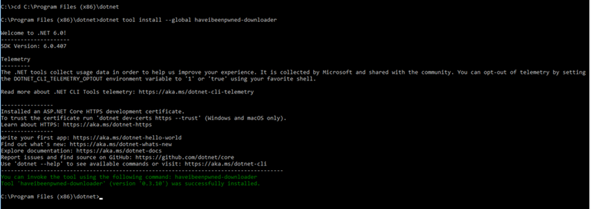
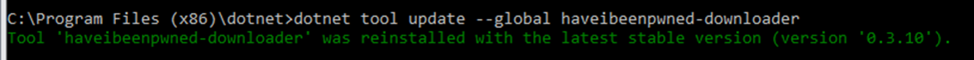
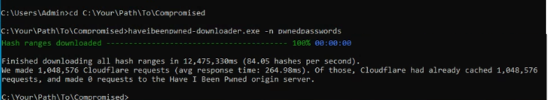
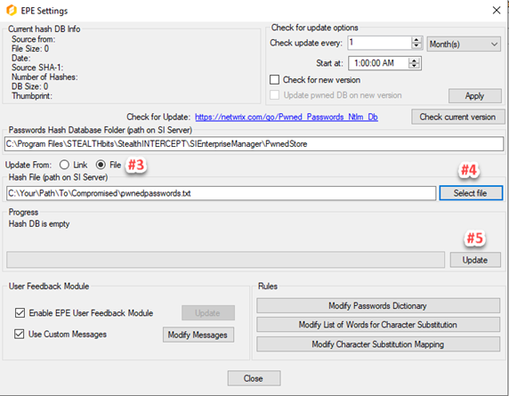
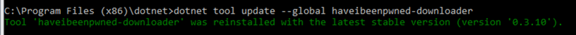
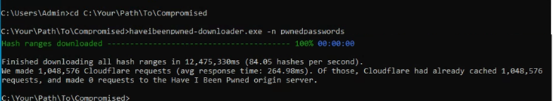

Before you start




- Please note that Pwnd Passwords Downloader is a third party, open source tool, created by the HaveIBeenPwned team, and distributed under a BSD 3-Clause License. You might experience issues during the hash download process, depending on your threading settings or the load on the CloudFlare backend. The Pwnd Passwords Downloader tool will automatically retry to continue downloading the hashes until it fully completes the download process.
- HIBP (Have I Been Pwned database) hashes can take up to 30 GB. The resultant database after converting your hashes for SI is almost the same in size. Make sure that you have enough free space on your disk.
Instructions
Step 1. Install .NET 6.0
IMPORTANT. It is strongly recommended to install .NET 6 first as it only guarantees to get the latest breached hashes from Have I Been Pwned (HIBP).- Download and install .NET 6 from https://dotnet.microsoft.com/en-us/download/dotnet/6.0
Step 2. Install Pwnd Passwords Downloader
- Open Command Prompt, and navigate to your .NET install folder (e.g. C:\Program Files (x86)\dotnet).
- Run:
dotnet tool install --global haveibeenpwned-downloader
Step 3. Update an already installed Pwnd Passwords Downloader
- Open Command Prompt
- Run:
dotnet tool update --global haveibeenpwned-downloader

Usage of Pwnd Passwords Downloader
To download NTLM hashes:- Navigate to the folder where you want to download the hashes
- Download all NTLM hashes to a single txt file, called for example pwnedpasswords.txt:

Step 4. Prepare Pwned DB for SI
- Run SI console.
- Select Configuration\’EPE setting’ menu item.
- Select File button.
- Click ‘Select File’ and choose downloaded txt file.
- Click the Update button.